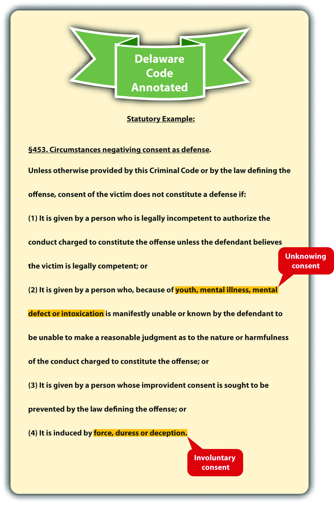
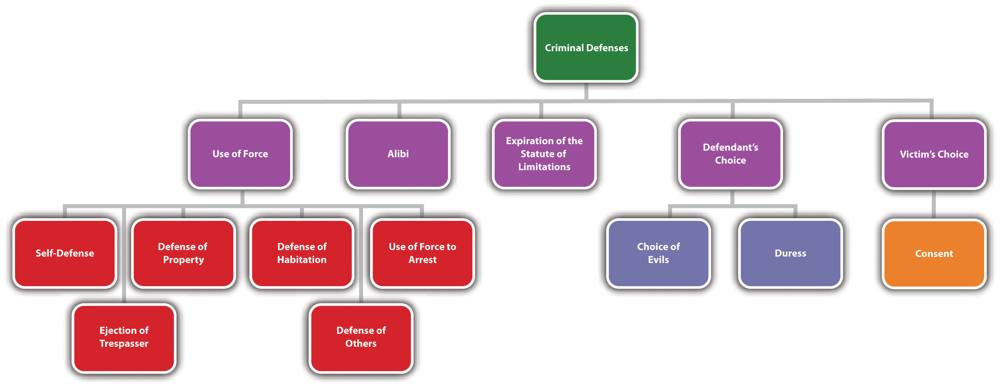

ConsentA defense that justifies criminal conduct under certain circumstances if the victim knowingly and voluntarily chooses to allow the defendant to commit it. by the victim can also form the basis of a justification defense to criminal conduct. Consent is most commonly used as a defense to sex crimes such as rape, and lack of consent is a criminal element of most sexual offenses that must be proven beyond a reasonable doubt. Thus consent to sexual acts is discussed in Chapter 10 "Sex Offenses and Crimes Involving Force, Fear, and Physical Restraint". In this section, consent to nonsexual conduct is explored. Consent is a defense that can be statutory or common law, perfect or imperfect, depending on the jurisdiction.
Consent can be a valid defense to a crime only if the victim chooses to render it. Thus it must be proffered knowingly and voluntarily, or it is ineffective. Under the Model Penal Code, consent is ineffective if “it is given by a person who is legally incompetent to authorize the conduct…it is given by a person who by reason of youth, mental disease or defect or intoxication is manifestly unable to make a reasonable judgment…it is induced by force, duress or deception” (Model Penal Code § 2.11(3)). In general, consent is not knowing if it is given by an individual who is too young, mentally incompetent,Colo. Rev. Stat. Ann. § 18-1-505, accessed November 23, 2010, http://www.michie.com/colorado/lpext.dll?f=templates&fn=main-h.htm&cp=. or intoxicated. In general, consent is not voluntary if it is induced by force, threat of force, or trickery.Del. Code Ann. tit. 11 § 453, accessed November 23, 2010, http://delcode.delaware.gov/title11/c004/index.shtml#451.
Gina drinks six glasses of wine at a party and offers to be the “donkey” in a game of pin the tail on the donkey. Other party members watch as Gina staggers her way to the front of the room and poses in front of the pin the tail on the donkey poster. Geoff walks up to Gina and stabs her several times in the buttocks with a pin. Geoff probably cannot claim consent as a defense to battery in this case. Gina consented to battery while she was intoxicated, and clearly she was unable to make a reasonable judgment. Thus her consent was not given knowingly and was ineffective in this situation.
Change the example with Gina and Geoff. Imagine that Gina just arrived at the party and has not consumed any alcohol. Geoff tells Gina he will poke out her eye with a pin if she does not volunteer to be the donkey in the pin the tail on the donkey game. He exemplifies his threat by making stabbing gestures at Gina’s eye with the pin. Frightened, Gina goes to the front of the room and poses in front of the donkey poster until Geoff stabs her in the buttocks with the pin. Geoff probably cannot claim consent as a defense to battery in this case. Gina consented in response to Geoff’s threat of physical harm. Thus her consent was not given voluntarily and was ineffective in this situation.
Figure 5.7 Delaware Code Annotated
Consent is a defense to only a few crimes. In most jurisdictions, consent can operate only as a defense to sexual conduct, injury that occurs during a sporting event, and crimes that do not result in serious bodily injury or death.Me. Rev. Stat. Ann. 17-A § 109, accessed November 23, 2010, http://www.mainelegislature.org/legis/statutes/17-A/title17-Asec109.html. As the Model Penal Code states, “[w]hen conduct is charged to constitute an offense because it causes or threatens bodily harm, consent to such conduct or to the infliction of such harm is a defense if: (a) the bodily harm consented to or threatened by the conduct consented to is not serious; or (b) the conduct and the harm are reasonably foreseeable hazards of joint participation in a lawful athletic contest or competitive sport” (Model Penal Code § 2.11(2)).
Review the examples with Gina and Geoff. Change the examples, and imagine that Gina did not consume any alcohol and was not threatened by Geoff. If Gina offers to be the donkey in the pin the tail on the donkey game and Geoff stabs her in the buttocks with the pin, Geoff may be able to use consent as a defense to battery. Gina’s consent appears to be knowing and voluntary. Gina probably does not suffer serious bodily injury from the pin stab in the buttocks. Thus the elements of legal consent exist, and this situation is appropriate for the consent defense.
Figure 5.8 Diagram of Defenses, Part 1
Answer the following questions. Check your answers using the answer key at the end of the chapter.